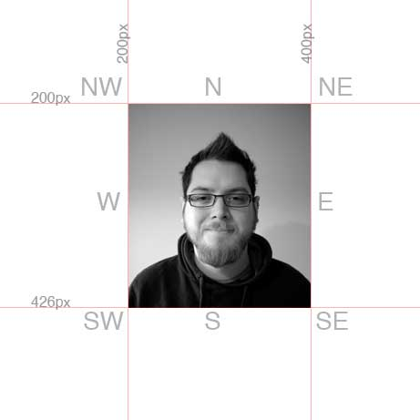

Note: This post was originally published on iamianwright.com it's been moved here for archival purposes.
I set myself a little project yesterday to make an image where the head follows the cursor around the screen. I thought it would be an interesting way to learn jQuery. I took nine images of me and then I put together a simple test.
The image was set to absolute positioning, 200px from top and 200px from the left. This allows me to set up a series of if statements that find out if the cursor was in a specific sector.

The example is here: http://clients.imagecircus.com/jquery/
The next step is to make all the measurements relative to the image. With the current version the image must be absolutely positioned which is limiting. Ultimately I would like to be able to place the image within a fluid layout and still have the interaction work.
Having done some research online it looks like I need to use minus offsetLeft and minus offsetTop to set the origin to the top left of the image. I am having some trouble figuring out the code though. Hopefully one of my developer friends will point me in the right direction.
Other improvements to make are making sure that the sectors overlap as currently there are dead spots between them that show the straight on image and perhaps more importantly preloading all the images.
UPDATE: A photographer friend of mine took some better headshots so the example has been updated with those.